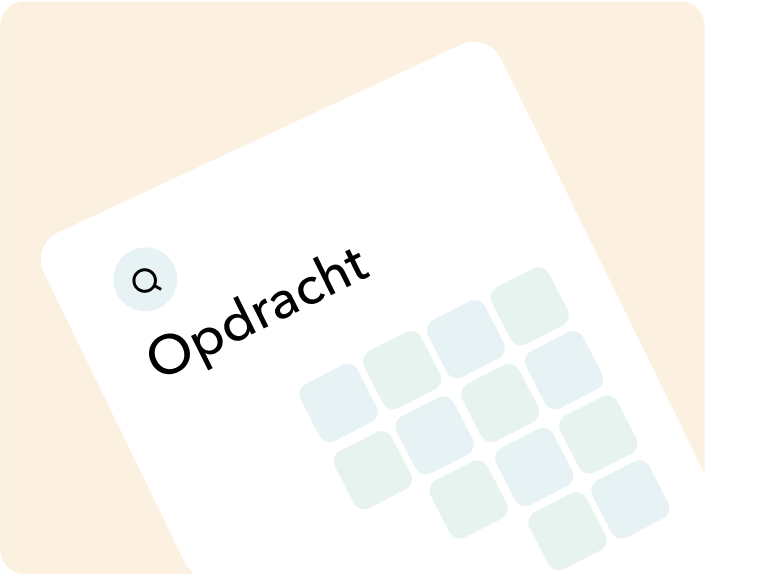

Hoe kunnen
kwalitatieve leads worden gegenereerd via een marketing automation proces waarin landingspagina’s worden
gecreëerd met een relevante boodschap, naar een specifieke doelgroep, op het juiste moment met als doel het
werven van potentiële nieuwe klanten?

Opdrachtomschrijving
Brik is een digital design en development bureau in Venlo en
het realiseert websites en digitale applicaties. Bij Brik is de noodzaak ontstaan om meer kwalitatieve leads
te werven. Ze willen hiervoor gerichte online marketing campagnes inzetten die gekoppeld zijn aan een
geoptimaliseerd marketing automation proces. Het doel hiervan is om de juiste doelgroep aan te spreken op
het juiste moment met voor hen interessante content. Deze informatie en kennis in de vorm van
landingspagina’s, social media campagnes en geautomatiseerde e-mails moet ervoor zorgen dat een lead wordt
omgezet in een kwalitatieve lead.
Aan de ene kant van het marketing automation proces staat doelgroepprofilering maar aan de andere kant staat
ook het ontwikkelen van een omnichannel strategie door middel van landingspagina’s, social media, seo, sea
en e-mailcampagnes.
Probleemanalyse
In de huidige situatie worden klanten geworven via het
bestaande netwerk van Brik. Deze bron begint langzaam maar zeker leeg te raken waardoor er niet alleen
minder leads maar vooral ook minder kwalitatieve leads worden gegenereerd. Om deze reden is de noodzaak
ontstaan om meer klanten te werven waardoor omzettargets behaald kunnen blijven worden. Kwalitatieve leads
voor Brik zijn customer centric bedrijven en organisaties die de klant centraal stellen en bewust werken aan
een geoptimaliseerde customer journey voor hun product/dienst.
Doel
Het doel van de opdracht is om kwalitatieve leads te genereren
via een marketing automation proces waarin landingspagina’s worden gecreëerd met een relevante boodschap,
naar een specifieke doelgroep, op het juiste moment met als doel het werven van potentiële nieuwe
klanten
Met in de geoptimaliseerde landingspagina’s de uitgewerkte doelgroepprofielen en customer journey. Andere
kanalen zoals social media, seo en sea kunnen er voor zorgen dat er bezoekers op de gerichte
landingspagina’s terecht komen. Deze bezoekers worden omgezet naar leads met het verzamelen van
klantinformatie via contactgegevens. Vervolgens wordt door middel van een e-mail flow de
informatievoorziening naar de lead geautomatiseerd waardoor de kennis bij de lead wordt vergoot en hij
eenvoudiger converteert naar een potentiële klant.
Product owner
Het project is een interne opdracht binnen Brik en heeft
daarom ook een interne stakeholder. De product owner van het project is Chris Bovers.